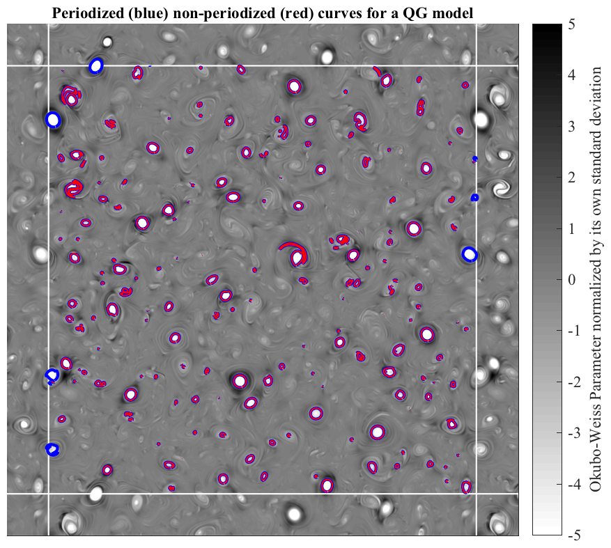

CLOSEDCURVES Locate and interpolate closed curves in a possibly periodic domain. _______________________________________________________________________  ______________________________________________________________________ [XC,YC]=CLOSEDCURVES(F,FO) returns closed curves of the matrix F at level FO, i.e. curves where F=FO, as the cell arrays XC and YC. If F has N contiguous patches at the contour level FO, then XC and YC will be length N cell arrays. After rounding, the values of XC will be indices into the *columns* of F, while YC will be indices into the *rows*. [XC,YC]=CLOSEDCURVES(X,Y,F,FO) alternately specifies X and Y axes to go with F. X is associated with the *columns* of F and Y with its *rows*. The lengths of X and Y must match SIZE(F,2) and SIZE(F,1) respectively. Use CELLPLOT(XC,YC) to plot the curves. CLOSEDCURVES works by calling Matlab's CONTOUR routine, re-arranging the contour matrix output, and throwing away non-closed contours. CLOSEDCURVES has options for considering a periodic domain, and for interpolating the curves at a specified resolution, as described below. The above figure shows closed curves of the Okubo-Weiss parameter P, specifically the contour level P = -4 times its own standard deviation, in a numerical simulation of quasi-geostrophic (QG) turbulence. __________________________________________________________________ Periodic extension CLOSEDCURVES can look for curves within a singly or doubly periodic version of the input field F. CLOSEDCURVES(...,'periodic') will make F doubly periodic before looking for closed curves. The X and Y axes will be extended based on their regular spacing, and these extended values will be returned in XC and YC for curves that fall into the periodically extended domain. CLOSEDCURVES(...,'periodic',N) extends F by N points in all directions. CLOSEDCURVES(...,'periodic',N,M) extends F by M points at both the left and the right (rows), and N points at the top and the bottom (columns). To apply the periodic extension in only one of the dimesions, use CLOSEDCURVES(...,'periodic',N,0) or CLOSEDCURVES(...,'periodic',0,M). The above figure illustrates the difference between the periodized and non-periodized algorithm. In periodic domain such as this one, closed curves at the region boundary will be missed wihtout periodization. See PERIODIZE for details. __________________________________________________________________ Interpolation CLOSEDCURVES can also interpolate the curves to a specified number of points along each curve, in order to increase the spatial resolution. [XC,YC]=CLOSEDCURVES(...,'interpolate',NPOINTS) will spline-interpolate each curve to be length NPOINTS. In this case, XC and YC will be *matrices* instead of cell arrays. The number of rows of XC and YC is then NPOINTS, with each column corresponding to a separate curve. Choosing a high value of NPOINTS, say NPOINTS=256, will minimize errors in integral calculations based on these curves, such as those carried out by CURVEMOMENTS. __________________________________________________________________ See also CURVEMOMENTS, CURVEINTERP, PERIODIZE. 'closedcurves --t' runs a test. 'closedcurves --f' generates the above figure. Usage: [xc,yc]=closedcurves(f,fo); [xc,yc]=closedcurves(x,y,f,fo); [xc,yc]=closedcurves(x,y,f,fo,'interpolate',256); [xc,yc]=closedcurves(x,y,f,fo,'periodic',M); [xc,yc]=closedcurves(x,y,f,fo,'periodic',N,M); [xc,yc]=closedcurves(x,y,f,fo,'periodic',N,M,'interpolate',256); __________________________________________________________________ This is part of JLAB --- type 'help jlab' for more information (C) 2013--2015 J.M. Lilly --- type 'help jlab_license' for details